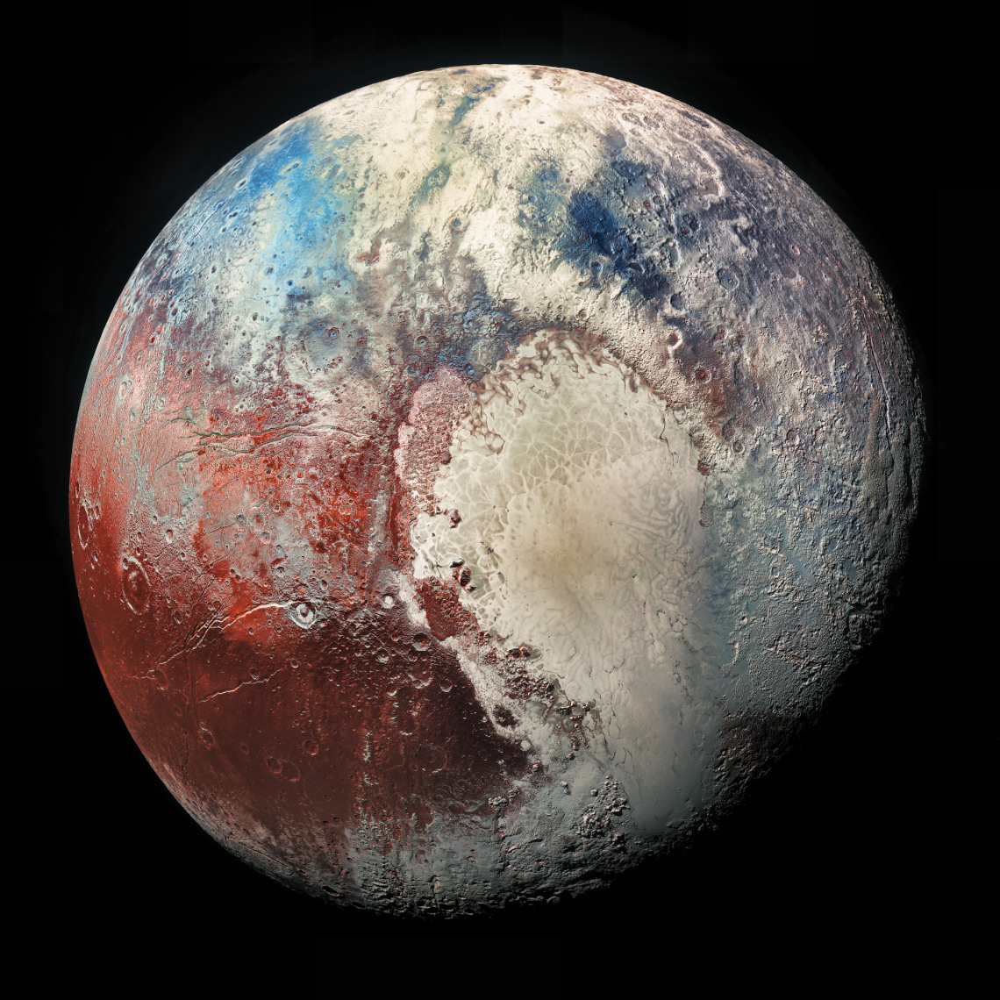

About Pluto
Pluto is a dwarf planet in the Kuiper belt, a ring of bodies beyond the orbit of Neptune. It is the ninth-largest and tenth-most-massive known object to directly orbit the Sun. It is the largest known trans-Neptunian object by volume, by a small margin, but is less massive than Eris. Like other Kuiper belt objects, Pluto is made primarily of ice and rock and is much smaller than the inner planets. Pluto has roughly one-sixth the mass of the Moon, and one-third its volume.
- Diameter: 2,377 km
- Orbit: 39.48 AU from the Sun
- Interesting Fact: Pluto's atmosphere is fascinating because it expands when it gets closer to the Sun and freezes when it's farther away, changing dramatically as it orbits.